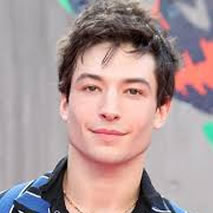

Personagens Animais Fantásticos !
Albus Dumbledore
Albus Percival Wulfric Brian Dumbledore (Alvo Percival Wulfrico Brian Dumbledore, no Brasil); (1881 - 30 de junho de 1997) é um personagem da saga de livros Harry Potter, criada por J.K.Rowling. Nas histórias do mundo dos feiticeiros, foi professor de Transfiguração e mais tarde diretor da Escola de Magia e Feitiçaria de Hogwarts. Dumbledore também foi membro da Confederação Internacional de Feiticeiros, Presidente da Suprema Corte dos Feiticeiros e Presidente do Wizengamot. Considerado por muitos uma "lenda viva" e um dos bruxos mais poderosos de todos os tempos, foi o único capaz de fazer frente a Lord Voldemort. Dumbledore foi agraciado, ainda em vida (acontecimento quase inédito no mundo da magia), com a Ordem de Merlim - Primeira Classe, a mais alta condecoração que pode ser atribuída a um feiticeiro.
Filho mais velho de Percival e Kendra Dumbledore, o feiticeiro "meio-sangue" teve dois irmãos mais novos, Aberforth e Ariana. O pai morreu na prisão de Azkaban quando Dumbledore ainda era jovem, a mãe e a irmã morreram posteriormente na sequência de dois acidentes. Dumbledore tornou-se conhecido graças à sua vitória num duelo "lendário"com Grindelwald, um dos feiticeiro das trevas mais terríveis e perigosos de que há memória, à descoberta das doze utilidades do sangue de dragão e pelo seu trabalho de alquimia em parceria com Nicolas Famel (Nicolau Flamel na versão brasileira).
Dumbledore foi também um dos principais protagonistas da resistência à ascensão de Lord Voldemort, sendo o responsável direto pela criação da Ordem da Fénix. A organização foi fundada para combater os Comensais da Morte. Esta iniciativa só ajudou a reforçar a ideia de que Dumbledore foi o único feiticeiro que Voldemort alguma vez temeu. Foi ainda proprietário da famosa Varinha das Varinhas entre 1945 e 1997 e considerado por muitos o melhor diretor que Hogwarts teve. Quando estava prestes a morrer, devido à maldição de um anel, Dumbledore arquitetou a sua própria morte com a ajuda de Severus Snape. Embora já não fosse vivo na época, foi graças às suas "maquinações" que Voldemort acabou por ser derrotado e a paz restaurada no mundo da magia. Dumbledore é o único diretor de Hogwarts sepultado nos campos da escola.
Supõe-se que o antigo diretor da escola primária frequentada por J.K.Rowling tenha sido a inspiração para o personagem.[2][3]
Nas adaptações cinematográficas, o personagem é interpretado nos dois primeiros filmes, pelo ator Richard Harris, sendo que, após a morte do ator em 2002, Harris foi substituído por Michael Gambon. Os dois atores foram dublados/dobrados pelo mesmo ator no Brasil (Lauro Fabiano) e em Portugal (Alfredo Brito). Jude Law foi o intérprete de uma versão mais jovem em "Animais Fantásticos: Os Crimes de Grindelwald".
Newt Scamander
Newton "Newt" Ártemis Fido Scamander (nascido em 1897) famoso Magizoologista, foi mencionado pela primeira vez em Harry Potter e a Pedra Filosofal, mais precisamente, como autor de Animais Fantásticos e Onde Habitam, um dos livros indicados na lista de materiais necessários para alunos do primeiro ano na Escola de Magia e Bruxaria de Hogwarts. O mesmo livro, é citado na primeira edição traduzida como "Animais Fantásticos e Onde Habitam". O nome de Newt Scamander aparece ainda, no Mapa do Maroto, com 96 anos, na adaptação cinematográfica em Harry Potter e o Prisioneiro de Azkaban, terceiro volume da saga.
Newt Scamander desenvolveu um interesse em animais fantásticos ainda pequeno, com o incentivo da Sra. Scamander que era uma criadora entusiástica de hipogrifos. Iniciou os estudos na Escola de Magia e Bruxaria de Hogwarts, sendo ordenado para Lufa-lufa. Muito provavelmente escolheu o Trato das Criaturas Mágicas, como opção no seu terceiro ano.[1] O pequeno Newt era tímido, tinha poucos amigos e não era a primeira opção das garotas. Ainda assim, era um aluno brilhante em Trato das Criaturas Mágicas, porém razoavelmente mal em transfiguração. Viu seus estudos serem interrompidos quando, acusado de pôr em risco a vida humana dado o seu interesse inabitual em criaturas mágicas, fora expulso. Sabe-se que Alvo Dumbledore, à época, professor de Transfiguração argumentou veementemente a favor do jovem lufano.
 Gellert Grindelwald
Gellert Grindelwald
Gellert Grindelwald nasceu entre 1882 e 1883, muito provavelmente no Leste Europeu, já que seu nome Gellert é de origem húngara, porém a Escandinávia também é uma possibilidade. Foi educado no Instituto Durmstrang, uma escola ao norte da Europa (Áustria) e que aceita alunos de todo o continente, como aluno, provou ser tão brilhante e talentoso na magia como Alvo Dumbledore (Albus Dumbledore em Portugal) que, por volta da mesma altura, recebia a sua formação na Escola de Magia e Bruxaria de Hogwarts, na Escócia. Todavia, Grindelwald não usou os seus talentos consideráveis para ganhar prêmios e honra como Dumbledore; em vez disso, ele escolheu a experimentação nas Artes das Trevas. As suas incursões na área tornaram-se de tal modo sadísticas que chegou ao ponto de quase matar alguns dos seus colegas, e por causa disso, foi expulso de Durmstrang em 1898, com dezesseis anos de idade.
Grindelwald era particularmente interessado nas Relíquias da Morte (Talismãs da Morte em Portugal), tendo usado o simbolo das Relíquias como seu, e gravando-o numa das paredes de Durmstrang antes da sua expulsão. A sua investigação sobre o assunto levou-o à sua tia-avó, a célebre historiadora mágica Bathilda Bagshot, habitante de Godric's Hollow, na Inglaterra, onde Ignotus Peverell, lendário dono da Capa da Invisibilidade (Manto da Invisibilidade em Portugal), uma das Relíquias, havia vivido e fora sepultado.
Foi em Godric's Hollow que Grindelwald conheceu e travou amizade com Alvo Dumbledore, um jovem feiticeiro acabado de sair de Hogwarts, tão talentoso e brilhante quanto ele. Os dois jovens tornaram-se unidos pelas suas ambições para a glória e travaram planos para formar uma "nova ordem mundial", na qual feiticeiros dominariam sobre os trouxas (muggles em Portugal). Ambos partilhavam um fascínio sobre as Relíquias da Morte, por razões distintas: Dumbledore desejava utilizar a Pedra da Ressurreição para trazer de volta os seus pais falecidos, enquanto Grindelwald desejava-a para formar um exército de Inferi; obviamente, Grindelwald não tinha muito conhecimento sobre os verdadeiros poderes das Relíquias. Os dois, juntos, cunharam a frase que se tornaria mais tarde no mote de Grindelwald, e a sua justificação para cometer crimes hediondos contra todos aqueles que se opusessem a ele: "Para um Bem Maior". Os dois tornaram-se inseparáveis. Grindelwald se aproveitou da amizade com Dumbledore e usou-a para seu proveito, manipulando-o até ele o ajudar inquestionavelmente nos seus planos.

Credence Barebone
Credence Barebone (Aurélio Dumbledore) foi um bruxo norte-americano puro-sangue ou mestiço que viveu durante o Século XX. Ele é o filho adotivo de Mary Lou Barebone, que é líder da Sociedade Filantrópica Nova Salém, um grupo anti-bruxaria Não-Maj existente em Nova Iorque. Credence teve duas irmãs adotivas, Chastity e Modesty, morando com elas e sua mãe adotiva. Credence era um Obscuro, sendo o mais velho já registrado, quebrando o recorde anterior de 10 anos de idade. Isso prova do quão poderoso ele era como bruxo. Em Animais Fantásticos: Os Crimes de Grindelwald, o próprio Grindelwald revela a Creedence que ele, na verdade, era Aurélio Dumbledore, o que faz dele filho de Kendra e irmão de Ariana, Aberforth e Alvo.